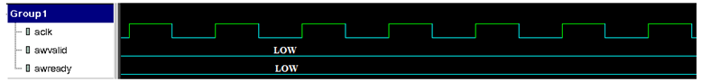
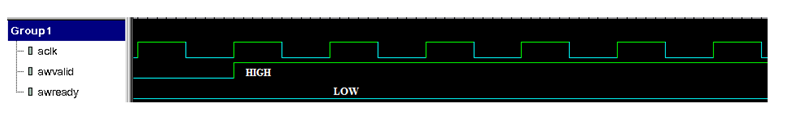
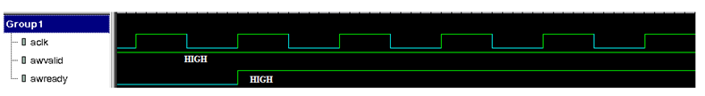
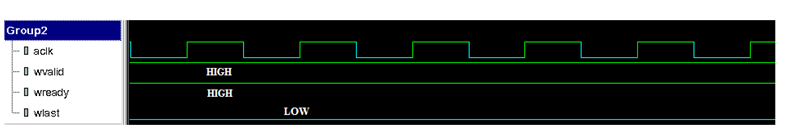

AXI VIP provides the SystemVerilog interface which can be used to connect the VIP to the DUT. A top level interface svt_axi_if is provided which contains an array of master & slave interfaces.
For example,
/* instantiate top level interface*/
svt_axi_if axi_if();
There are two ways on how you can set clock signal "aclk" for each/all of master and slave sub interfaces under this top level svt_axi_if interface instance.
1. If you want to use a common clock for all the master and slave port interfaces, there is 'common_aclk' signal at svt_axi_if level , which can be used. This common clock will then be used by all the port interfaces.
For example,
svt_axi_if axi_if();
assign axi_if.common_aclk = SystemClock;
You must leave svt_axi_system_configuration::common_clock_mode set to default value '1' for system configuration object.
1. If any/all master/slave port interface under svt_axi_if instance need to use a separate clock, then the 'aclk' signal in the port interface should be connected to respective individual clocks and system configuration object field " svt_axi_system_configuration::common_clock_mode" should be set to '0' to disable common clock mode.
Configuration Objects
Configuration data objects convey the system level and port level testbench configuration. The configuration of agents is done in the build() phase of environment or the testcase. If the configuration needs to be changed later, it can be done through reconfigure() method of the Master, Slave Agent or System Env.
The configuration can be of the following two types:
Static configuration properties
Static configuration parameters specify a configuration value which cannot be changed when the system is running. Examples of static configuration parameters are number of masters and slaves, data bus width, and address width.
Dynamic configuration properties
Dynamic configuration parameters specify configuration value which can be changed at any time, regardless of whether the system is running or not. An example of a dynamic configuration parameter is a timeout value.
The configuration data objects contain built-in constraints, which come into effect when the configuration objects are randomized.
The AXI VIP defines following configuration classes:
System configuration (svt_axi_system_configuration)
The System configuration class contains configuration information which is applicable across the entire system. You can specify the system level configuration parameters through this class. You need to provide the system configuration to the system env from the environment or the testcase. The system configuration mainly specifies:
Number of master and slave agents in the system env
Port configurations for master and slave agents
Virtual top level AXI interface
Address map
Timeout values
Port configuration (svt_axi_port_configuration)
The Port configuration class contains configuration information which is applicable to individual AXI master or slave agents in the system env. Some of the important information provided by port configuration class is:
Active or Passive mode of the master or slave port agent
Enable or disable protocol checks
Enable or disable port-level coverage
Interface type (AXI3/AXI4/AXI4-Lite)
Port configuration contains the virtual interface for the port
The port configuration objects within the system configuration object are created in the constructor of the system configuration.
Interconnect configuration class contains configuration information for the interconnect component. It has a handle to the system configuration. In addition, this class contains configuration for number of master and slave ports of the interconnect component, and the respective configuration for these master and slave ports.
For details on individual members of configuration classes, see the AXI VIP Class reference HTML documentation.
Transaction Objects
Transaction objects, which are extended from the uvm_sequence_item base class, define a unit of AXI protocol information that is passed across the bus. The attributes of transaction objects are public and are accessed directly for setting and getting values. Most transaction attributes can be randomized. The transaction object can represent the desired activity to be simulated on the bus, or the actual bus activity that was monitored.
AXI transaction data objects store data content and protocol execution information for AXI transactions in terms of timing details of the transactions.
These data objects extend from the uvm_sequence_item base class and implement all methods specified by UVM for that class.
AXI transaction data objects are used to:
Generate random stimulus
Report observed transactions
Generate random responses to transaction requests
Collect functional coverage statistics
Class properties are public and accessed directly to set and read values. Transaction data objects support randomization and provide built-in constraints. Two set of constraints are provided: valid_ranges and reasonable constraints.
valid_ranges constraints limit generated values to those acceptable to the drivers. These constraints ensure basic VIP operation and should never be disabled.
reasonable_* constraints, which can be disabled individually or as a block, limit the simulation by the following:
Enforcing the protocol. These constraints are typically enabled unless errors are being injected into the simulation.
Setting simulation boundaries. Disabling these constraints may slow the simulation and introduce system memory issues.
The VIP supports extending transaction data classes for customizing randomization constraints. This allows you to disable some reasonable_* constraints and replace them with constraints appropriate to your system.
Individual reasonable_* constraints map to independent fields, each of which can be disabled. The class provides the reasonable_constraint_mode() method to enable or disable blocks of reasonable_* constraints.
AXI VIP defines following transaction classes:
AXI Base transaction (svt_axi_transaction)
This is the base transaction type which contains all the physical attributes of the transaction like address, data, burst type, burst length, etc. It also provides the timing information the transaction, to the master and slave drivers, that is, delays for valid and .ready signals with respect to some reference events.
The master transaction class extends from the AXI transaction base class svt_axi_transaction. The master transaction class contains the constraints for master specific members in the base transaction class. At the end of each transaction, the master agent provides object of type svt_axi_master_transaction from its analysis ports, in active and passive mode.
AXI Slave transaction (svt_axi_slave_transaction)
The slave transaction class extends from the AXI transaction base class svt_axi_transaction. The slave transaction class contains the constraints for slave specific members in the base transaction class. At the end of each transaction, the slave agent provides object of type svt_axi_slave_transaction from its analysis ports, in active and passive mode.
The master and slave transactions contain a handle to configuration object of type svt_axi_port_configuration, which provides the configuration of the port on which this transaction would be applied. The port configuration is used during randomizing the transaction. The port configuration is available in the sequencer of the master or slave agent.
You should initialize the port configuration handle in the transaction using the port configuration available in the sequencer of the master or slave agent. If the port configuration handle in the transaction is null at the time of randomization, the transaction will issue a fatal message.
AXI ACE Snoop Base transaction (svt_axi_snoop_transaction)
This is the base class for snoop transaction type which contains all the physical attributes of the transaction like address, data, transaction type, etc. It also provides the timing information of the transaction to the master component, that is, delays for valid and ready signals with respect to some reference events. The svt_axi_snoop_transaction also contains a handle to configuration object of type svt_axi_port_configuration, which provides the configuration of the port on which this transaction would be applied. The port configuration is used during randomizing the transaction.
The master snoop transaction class extends from the snoop transaction base class svt_axi_snoop_transaction. The master snoop transaction class contains the constraints for master specific members in the base transaction class. At the end of each transaction, the port monitor within the master VIP component provides object of type svt_axi_master_snoop_transaction from its analysis ports, in active and passive mode.
AXI transaction on Interconnect Slave port (svt_axi_ic_slave_transaction)
svt_axi_ic_slave_transaction class is used by the slave ports of the Interconnect component, to represent the transaction received on the Interconnect slave port from a master component. At the end of each transaction on the Interconnect Slave port, the port monitor within the Interconnect slave port provides object of type svt_axi_ic_slave_transaction from its analysis port, in active and passive mode.
AXI transaction on Interconnect Master port (svt_axi_ic_master_transaction)
svt_axi_ic_master_transaction class is used by the master ports of the Interconnect component, to represent the transaction transmitted on the interconnect master port to a connected slave component. At the end of each transaction on the Interconnect Master port, the port monitor within the Interconnect Master port provides object of type svt_axi_ic_master_transaction from its analysis port, in active and passive mode.
This transaction class is not supported in this release. Currently, the port monitor within the Interconnect Master port provides object of type svt_axi_master_transaction from its analysis port.
AXI ACE Snoop transaction on Interconnect Slave port (svt_axi_ic_snoop_transaction)
svt_axi_ic_snoop_transaction class extends from the snoop transaction base class svt_axi_snoop_transaction. This class represents the snoop transaction at the interconnect slave ports, which are connected to the external master components. At the end of each snoop transaction on the Interconnect Slave port, the port monitor within the Interconnect Slave port provides object of type svt_axi_ic_snoop_transaction from its analysis port, in active and passive mode.
For more information on individual members of transaction classes, see the AXI VIP Class reference HTML documentation.
Analysis Ports
The Port Monitor in the Master and Slave Agent provides item_started_port and item_observed_port analysis ports.
The Master and Slave Agents respectively write the svt_axi_master_transaction and svt_axi_slave_transaction object to the item_started_port analysis port which provides AXI transactions available just when the transaction starts.
At the end of the transaction, the Master and Slave Agents respectively write the completed
svt_axi_master_transaction and svt_axi_slave_transaction object to the item_observed_port analysis port. This holds true in active as well as passive mode of operation of the master or slave agent. You can use this analysis port for connecting to scoreboard, or any other purpose, where a transaction object for the completed transaction is required.
The Port Monitor in the Interconnect Master Agent and Interconnect Slave agent also provides an analysis
port item_observed_port. At the end of the transaction on the interconnect ports, the port monitor within the Interconnect Master Agent and Interconnect Slave agent provides the completed
svt_axi_ic_master_transaction and svt_axi_ic_slave_transaction object respectively, from its analysis port.
Also you can create user-defined analysis ports for their scoreboarding purpose.
Usage:
Steps to use item_observed_port analysis port in an UVM verification environment.
1. Create an axi scoreboard class extending from uvm_scoreboard class and declare the export for the analysis port.
//The uvm_analysis_imp_decl allows for a scoreboard (or other analysis component) to
support input from many places
/** Macro that define two analysis ports with unique suffixes */
`uvm_analysis_imp_decl(_initiated)
`uvm_analysis_imp_decl(_response)
class axi_uvm_scoreboard extends uvm_scoreboard;
/** Analysis port connected to the AXI Master Agent */
Callbacks are an access mechanism that enable the insertion of user-defined code and allow access to objects for scoreboarding and functional coverage. Each Master and Slave Agent is associated with a callback class that contains a set of callback methods. These methods are called as part of the normal flow of procedural code. There are a few differences between callback methods and other methods that set them apart.
Callbacks are virtual methods with no code initially, so they do not provide any functionality unless they are extended. The exception to this rule is that some of the callback methods for functional coverage already contain a default implementation of a coverage model.
The callback class is accessible to you so the class can be extended and your code inserted, potentially including testbench specific extensions of the default callback methods, and testbench specific variables and/or methods used to control whatever behavior the testbench is using the callbacks to support.
Callbacks are called within the sequential flow at places where external access would be useful. In addition, the arguments to the methods include references to relevant data objects. For example, just before a monitor puts a transaction object into an analysis port is a good place to sample for functional coverage since the object reflects the activity that just happened on the pins. A callback at this point with an argument referencing the transaction object allows this exact scenario.
There is no need to invoke callback methods for callbacks that are not extended. To avoid a loss of performance, callbacks are not executed by default. To execute callback methods, callback class must be registered with the component using uvm_register_cb macro.
AXI VIP uses callbacks in three main applications:
Access for functional coverage
Access for scoreboarding
Insertion of user-defined code
Master Agent Callbacks
In the Master Agent, the callback methods are called by Master Driver and Port Monitor components.
The following callback classes which contain the callback methods are invoked by the Master Agent:
svt_axi_master_callback
svt_axi_port_monitor_callback
For more information on these classes, see the class reference HTML documentation.
The following is the list of callback methods available from svt_axi_master_callback class:
virtual function void associate_xact_to_barrier_pair (svt_axi_masteraxi_master , svt_axi_master_transactionxact, svt_axi_barrier_pair_transactionbarrier_pair_xact [$])
Callback issued by master transactor when barrier transactions are enabled and when 'associate_barrier_xact' bit is set to 1 in the svt_axi_master_transaction class
virtual function void input_port_cov (svt_axi_master axi_master , svt_axi_transaction xact )
Callback issued to allow the testbench to collect functional coverage information from a transaction received at the input channel which is connected to the generator.
virtual function void post_input_port_get ( svt_axi_master axi_master , svt_axi_transaction xact , ref bit drop)
Called after the master transactor gets a transaction from the input TLM port.
virtual function void post_snoop_input_port_get (svt_axi_master axi_master , svt_axi_master_snoop_transaction xact, ref bit drop)
Callback issued by master transactor after pulling the snoop response from the snoop response generator
virtual function void pre_address_phase_started (svt_axi_master axi_master , svt_axi_transaction xact)
Called just before driving the address phase of a transaction.
virtual function void pre_cache_update (svt_axi_master axi_master , svt_axi_master_transaction xact )
Callback issued by master transactor just before updating the data into the cache.
virtual function void pre_snoop_data_phase_started ( svt_axi_master axi_master , svt_axi_master_snoop_transaction xact)
Callback issued just before driving the data phase of a snoop transaction.
virtual function void pre_snoop_resp_phase_started (svt_axi_master axi_master , svt_axi_master_snoop_transaction xact)
Callback issued just before driving response to a snoop transaction.
virtual function void pre_write_data_phase_started (svt_axi_master axi_master , svt_axi_transaction xact)
Called just before driving a data beat of a write transaction
virtual function void snoop_input_port_cov (svt_axi_master axi_master , svt_axi_master_snoop_transaction xact)
Callback issued to allow the testbench to collect functional coverage information from a snoop transaction received at the input port of the master transactor, which is connected to the snoop response generator.
axi_master - A reference to the svt_axi_master component that is issuing this callback. The user's callback implementation can use this to access the public data and/or methods of the component.
xact - A reference to the transaction descriptor object of interest.
drop - A ref argument, which if set by the user's callback implementation causes the transactor to discard the transaction descriptor without further action.
Slave Agent Callbacks
In the Slave Agent, the callback methods are called by Slave Driver and port monitor components.
The following callback classes which contain the callback methods are invoked by the Slave Agent:
svt_axi_slave_callback
svt_axi_port_monitor_callback
For more information of these classes, see the class reference HTML documentation.
The following is the list of callback methods available from svt_axi_slave_callback class:
virtual function void input_port_cov (svt_axi_slave axi_slave , svt_axi_transaction xact )
Callback issued to allow the testbench to collect functional coverage information from a transaction received the input channel which is connected to the generator.
virtual function void post_input_port_get ( svt_axi_slave axi_slave , svt_axi_transaction xact , ref bit drop )
Called after the slave transactor gets a slave response transaction from the slave response generator.
axi_slave - A reference to the svt_axi_slave component that is issuing this callback. The user's callback implementation can use this to access the public data and/or methods of the component.
xact - A reference to the transaction descriptor object of interest.
drop - A ref argument, which if set by the user's callback implementation causes the transactor to discard the transaction descriptor without further action.
The following is the list of callback methods available from svt_axi_port_monitor_callback class:
Called before putting a transaction to the analysis port. Extension of this method in the default coverage callback class is used for triggering transaction coverage.
Called when a transaction completes and when use_tlm_gp_sequencer is set in the port configuration. The completed AXI transaction is converted to a PV-annotated TLM GP and is made available through this callback.
Called when a snoop transaction completes and when use_tlm_gp_sequencer is set in the port configuration. The completed AXI snoop response is converted to a PV-annotated TLM GP and is made available through this callback.
Called when read address handshake is complete, that is, when ARVALID and ARREADY are asserted. Extension of this method in the default coverage callback class is used for signal coverage of read address channel signals.
Called when read data handshake is complete, that is, when RVALID and RREADY are asserted. Extension of this method in the default coverage callback class is used for signal coverage of read data channel signals.
Called when write address handshake is complete, that is, when AWVALID and AWREADY are asserted. Extension of this method in the default coverage callback class is used for signal coverage of write address channel signals.
Called when write data handshake is complete, that is, when WVALID and WREADY are asserted. Extension of this method in the default coverage callback class is used for signal coverage of write data channel signals.
Called when write response handshake is complete, that is, when BVALID and BREADY are asserted. Extension of this method in the default coverage callback class is used for signal coverage of write response channel signals.
axi_monitor - A reference to the svt_axi_port_monitor component that is issuing this callback. The user's callback implementation can use this to access the public data and/or methods of the component.
item - A reference to the transaction descriptor object of interest.
Interconnect Env Callbacks
In the Interconnect Env, callback methods are called by the master and slave ports.
The following callback class contains the Interconnect Env callback method:
svt_axi_interconnect_callback
For more information of these classes, see the class reference HTML documentation.
The following is the list of callback methods available from svt_axi_interconnect_callback class:
virtual function void post_input_port_get(svt_axi_interconnect axi_interconnect, svt_axi_ic_slave_transaction xact)
Callback issued just after receiving a coherent transaction.
virtual function void post_slave_xact_gen(svt_axi_interconnect axi_interconnect, svt_axi_master_transaction xact)
Callback issued after the interconnect randomizes a transaction to be routed to a slave.
axi_interconnect - A reference to the svt_axi_interconnect component that is issuing this callback. The user's callback implementation can use this to access the public data and/or methods of the component.
xact - A reference to the transaction descriptor object of interest.
System Monitor Callbacks
System Monitor provides hooks in the form of callbacks, which can be used to perform such design specific checks. The following callback class contains the System Monitor callback method:
svt_axi_system_monitor_callback
Refer to AXI Class Reference HTML documentation for the specific callback methods of this callback class.
Called after the system monitor detects that a write transaction initiated by the interconnect corresponds to a write of dirty data returned by a snoop transaction.
system_monitor - A reference to the svt_axi_system_monitor component that is issuing this callback. The user's callback implementation can use this to access the public data and/or methods of the component.
sys_xact - A reference to the system transaction descriptor object of interest.
slave_xact - A reference to the slave transaction descriptor object which was detected as a dirty data write.
xact - A reference to the data descriptor object of interest.
coherent_xact - A reference to the coherent data descriptor object of interest.
snoop_xacts - A queue of all associated snoop transactions.
check - A reference to the check that will be executed
execute_check - A bit that indicates if the check must be performed.
Usage:
Steps to implement callbacks feature in an UVM verification environment.
1. Create a user-defined callback class that extends from the AXI VIP callback class.
class axiPortMonitorCallbacks extends svt_axi_port_monitor_callback;
2. Implement the required callback method in this extended class.
virtual function void new_transaction_started (svt_axi_port_monitor axi_monitor, svt_axi_transaction item);
$display("Inside new_transaction_started Port Monitor Callback");
item.print();
endfunction
3. Declare an instance of the user defined callback class (Example: In your env).
class axiEnv extends uvm_env;
axiPortMonitorCallbacks monitor_cb;
..
..
endclass
4. Register the callback with the appropriate component in either connect_phase or start_of_simulation_phase.
class axiEnv extends uvm_env;
..
..
function void start_of_simulation();
super.start_of_simulation_phase(phase);
monitor_cb = new( "monitor_cb" ); //create object of callback class
SystemVerilog models signal connections using interfaces and modports. Interfaces define the set of signals which make up a port connection. Modports define collection of signals for a given port, the direction of the signals, and the clock with respect to which these signals are driven and sampled.
AXI VIP provides the SystemVerilog interface which can be used to connect the VIP to the DUT. A top-level interface svt_axi_if is defined. The top-level interface contains an array of Master port sub-interfaces of type svt_axi_master_if, and Slave port sub-interfaces of type svt_axi_slave_if.
The top-level interface is contained in the system configuration class. The top-level interface is specified to the system configuration class using method svt_axi_system_configuration::set_if.
Alternatively, the interface can also be specified to the AXI System Env component directly through UVM Configuration database. For more details on usage, see AXI Basic example tb_axi_svt_uvm_basic_sys.
If the AXI System Env is used, then it first retrieves the configuration using the config db. It then attempts to retrieve the virtual interface using the config db. If a virtual interface is supplied through the config db, then the AXI System Env will update the configuration with it (a warning will be generated if the configuration object already has a virtual interface reference). The AXI System Env then passes the configuration object down to the master and slave agents. If the virtual interface is not supplied through the config db, then a fatal error is generated if the virtual interface is not valid in the configuration.
Otherwise the virtual interface in configuration is used without modification. When the System Env has a configuration object with a valid virtual interface, then all the sub-objects receive the interface from the configuration object.
If the Master or Slave Agent is used as standalone, then the process is the same. These classes will continue to receive the configuration object using the config db. In addition, they will retrieve the virtual interface from the config db and perform the same checks done in the AXI System Env to ensure that a valid configuration object is created that contains a virtual interface reference.
For more information on AXI Interface, see the $DESIGNWARE_HOME/vip/svt/amba_svt/latest/doc/class_ref/axi_svt_uvm_class_reference/html/interfaces.html
Modports
The port interface svt_axi_master_if contains following modports which you should use to connect VIP to the DUT:
svt_axi_slave_modport
This modport is used to connect master VIP component to slave DUT port.
svt_axi_debug_modport
This modport can be used by you to access the debug port signals. For information on debug port, see the “Using Debug Port”.
The port interface svt_axi_slave_if contains the following modports which you should use to connect VIP to the DUT:
svt_axi_master_modport
This modport is used to connect slave VIP component to master DUT port.
svt_axi_debug_modport
This modport can be used by you to access the debug port signals. See “Using Debug Port” for details on debug port.
Clocking Modes
The interface works in the following two clocking modes:
Common clock mode
Multiple clock mode
The clock mode can be selected using configuration parameter, svt_axi_system_configuration::common_clock_mode. When set to one, the signal common_aclk in the top interface will be used to drive clock of all port sub-interfaces. In this case, the system clock in the environment will need to be connected to common_aclk signal in the top interface.
When this configuration parameter is set to 0, the aclk signal of each port sub-interface would need to be connected to appropriate clock in the environment.
3.3.7.2.1 Common Clock Mode
In this mode,
All port sub-interfaces will operate on a single common clock.
You need to connect system clock to the common_aclk signal in the top interface.
Top-level interface will pass the common clock signal down to all port sub-interfaces.
3.3.7.2.2 Multiple Clock Mode
In this mode, each port interface would operate on a separate port interface clock. In this case, aclk signal in the port interface needs to be connected to the appropriate clock in the environment.
Bind Interfaces
AXI VIP also supports bind interfaces for master & slave. Bind interface is an interface which contains directional signals for AXI. You can connect DUT signals to these directional signals. Bind interfaces provided with VIP are svt_axi_master_bind_if and svt_axi_slave_bind_if. To use bind interface, you must instantiate the non-bind interface, and then connect the bind interface to the non-bind interface. VIP provides master and slave connector modules to connect the VIP bind interface to the VIP non-bind interface. You must instantiate a connector module corresponding to each instance of VIP master and slave, and pass the bind interface and non-bind interface instance to this connector module.
For more information on the usage of bind interface, see the AXI intermediate example.
Parameterized Interfaces
AXI VIP supports parameterized interfaces svt_axi_master_param_if and svt_axi_slave_param_if. These interfaces are parameterized for signal widths. The default value of all the parameters are same as the system constants defined in svt_axi_port_defines.svi (see Step 3.3.9). These interface parameters can be changed to match the DUT signal widths. The parameter value should be less than or equal to the system constant defined in svt_axi_port_defines.svi or svt_axi_user_defines.svi.
To use parameterized interface, the user still needs to instantiate the top-level interface svt_axi_if. The svt_axi_master_param_if interface should be used for connecting AXI Master VIP component to the DUT and svt_axi_slave_param_if interface should be used to connect AXI Slave VIP component to the DUT.
For usage of parameterized interface, see the tb_axi_svt_uvm_basic_param_if_sys example. The README file in the example describes the usage.
Transaction Status Tracking Methods and Events
Transaction status tracking methods provides information on the status of the data transfer at the interface. Different methods and events that you can make use of are as follows:
Transaction class status attributes indicate status of transactions based on valid and ready signals of the axi interface. The status attributes are addr_status, data_status, and write_resp_status for address phase, data phase, and write response phase respectively. The status indicator strings are INITIAL, ACTIVE, ACCEPT, PARTIAL _ACCEPT and ABORTED. HTML Class reference document provides detailed description on status strings and transaction status flow.
You can track the transaction flow through transaction object by referring these status indicator strings. This is helpful for transaction tracking in the log file.
INITIAL
Status is considered as INITIAL when valid and ready are both LOW on the channel
Example: Read addr_status at INITIAL state is shown as follows:

The status indicates that master has not driven an address at the interface
ACTIVE
The Status is considered as ACTIVE when valid signal is HIGH with ready signal at LOW. If the VIP agent is driving a transaction, (that is, Active VIP Agents) the status will be set to ACTIVE when it asserts valid signal whereas if the VIP Agent is monitoring the transfer, (for example, Passive VIP Agents) the status will be set to ACTIVE at the event of sampling valid signal.
Example: Read addr_status status changing to ACTIVE is illustrated as follows:
The status indicates that master has driven an address and is not yet accepted by the slave
ACCEPT
Status is considered as ACCEPT when the channel handshake is complete, that is when both ready and valid are both HIGH.
Example: Read addr_status changing to ACCEPT is shown as follows:
The status indicates that the slave has accepted the address with awvalid-awready handshake
PARTIAL_ACCEPT
PARTIAL_ACCEPT status is applicable on read/write data channels incase of multi-beat or burst transfer. In case of multi-beat transfer, the transfer is complete only when the last beat data is transferred. Status is considered as PARTIAL_ACCEPT when a beat is completed with hand shake but the last beat data is not transferred. For example, In case of an INCR4 write, for beat 1-3, when wvalid and wready are both HIGH then the status is PARTIAL_ACCEPT. The figure shows write data_status as PARTIAL_ACCEPT.

wlast at LOW indicate that the write data beats are not complete.
ABORTED
The status is considered as ABORTED when a transfer is canceled. This happens in case of a mid-simulation reset.
Transaction Class Methods
get_begin_time(): This method gives starting time of a transaction.
get_end_time(): This method gives end time of a transaction.
wait_for_transaction_end(): This method waits for the transaction to end. In case of read transfer, the transaction ends when read response is complete with read response handshake.
Similarly, for write, the transaction ends when the write response handshake is complete.
Events
VIP components issue transaction begin_event and end_event. These events are provided by the uvm library and they denote the start of transaction and end of transaction. These events are issued by the Master and Slave components as described below, in both active and passive mode.
begin_event: For WRITE transactions, begin_event is issued on the rising clock edge when awvalid (for address before data) or wvalid (for data before address) is high. For READ transactions, begin_event is issued on the rising clock edge when arvalid is high.
end_event: For WRITE transactions, the end_event is issued on the rising clock edge when bvalid and bready both are high. For READ transactions, the end_event is issued on the rising clock edge when rvalid, rlast and rready are high.
Overriding System Constants
The VIP uses include files to define system constants that, in some cases, you may override so the VIP matches your expectations. For example, you can override the maximum delay values. You can also adjust the default simulation footprint, like maximum address width.
The system constants for the VIP are specified (or referenced) in the following files (the first three files reside at $DESIGNWARE_HOME/vip/svt/amba_svt/latest/sverilog/include):
svt_axi_defines.svi
Top-level include file. It allows for the inclusion of the common define symbols and the port define symbols in a single file. Also, it contains a `include to read user overrides if the `SVT_AXI_INCLUDE_USER_DEFINES symbol is defined.
svt_axi_common_defines.svi
This file defines common constants used by the AXI VIP components. You can override only the User Definable constants, which are declared in ifndef statements, such as the following:
`ifndef SVT_AXI_MAX_ADDR_VALID_DELAY
`define SVT_AXI_MAX_ADDR_VALID_DELAY 16
`endif
svt_axi_port_defines.svi
This file contains the constants that set the default maximum footprint of the environment. These values determine the wire bit widths in the 'wire frame'-- they do not (necessarily) define the actual bit widths used by the components, which is determined by the configuration classes.
svt_axi_user_defines.svi
This file contains override values that you define. This file can reside anywhere-- specify its location on the simulator command line.
To override the SVT_AXI_MAX_ID_WIDTH constant from the svt_axi_port_defines.svi file,
Redefine the corresponding symbol in the svt_axi_user_defines.svi file. For example:
`define SVT_AXI_MAX_ID_WIDTH 12
In the simulator compile command,
Ensure that the directory containing svt_axi_user_defines.svi is provided to the simulator
Provide SVT_AXI_INCLUDE_USER_DEFINES on the simulator command line as follows:
+define+SVT_AXI_INCLUDE_USER_DEFINES
Note the following restrictions when overriding the default maximum footprint:
Do not use a value of 0 for a MAX_*_WDTH value. The value must be >= 1
The maximum footprint set at compile time must work for the full design. If you are using multiple instances of AXI VIP, only one maximum footprint can be set and must therefore satisfy the largest requirement.
The value of less than 32 is not supported for SVT_AXI_MAX_ADDR_WIDTH. SVT_AXI_MAX_ADDR_WIDTH only defines the footprint of address port. The actual used address with is defined by svt_axi_port_configuration::addr_width, which can still be configured to less than 32.
Support for TLM Generic Payload
The AXI VIP supports TLM Generic Payload feature where the user can develop sequences based on the uvm_tlm_generic_payload transaction type. The AXI VIP then maps these Generic Payload sequences into AXI specific sequences.
This feature is supported for UVM flow only, for interface types AXI3 and AXI4. Also, TLM Generic Payload feature does not yet map TLM Generic Payload transactions to AXI transactions with burst length greater than 16.
Generating TLM Generic Payload Stimulus
By default, AXI stimulus is generated using svt_axi_master_transaction sequence items in the AXI master agent sequencer. The bus-agnostic stimulus can be generated using uvm_tlm_generic_payload sequence items.
You can enable this functionality by setting the svt_axi_port_configuration::use_tlm_generic_payload to '1' for the corresponding AXI master before that master's build_phase is executed.
function void my_env::build_phase(uvm_phase phase);
Enabling this functionality causes the instantiation of svt_axi_tlm_generic_payload_sequencer in the svt_axi_master_agent::tlm_generic_payload_sequencer property and the execution of a layering sequence on the AXI transaction sequencer. The layering sequence pulls generated TLM generic payload sequence items from the generic payload sequencer, maps them to one or more AXI master transactions, and executes them on the driver. The layering sequence executes with a normal priority. It is still possible to execute normal AXI transaction sequences on the AXI transaction sequencer, in parallel with the TLM generic payload layering sequence.
The response from the execution of the generic payload item is annotated in the generic payload sequence item itelf. It is valid only when the completed generic payload sequence item is returned by the uvm_sequence::get_response() method.
class my_gp_seq extends uvm_sequence#(uvm_tlm_generic_payload);
...
task body();
`uvm_create(req);
req.set_command(UVM_TLM_READ_COMMAND);
req.set_address('h123456789);
req.set_length(64);
`uvm_send(req);
get_response(rsp);
if (rsp.is_response_ok()) begin
// gp.m_data[] is now valid
end
endtask
endclass
The TLM generic payload sequence items are mapped into one or more AXI transactions that implement the semantics of the Generic Payload transaction, as defined by the TLM 2.0 standard. It is not possible to generate all possible AXI master transactions from generic payload stimulus.
For demonstration of the usage, see the ts.tlm_generic_payload_test.sv test present in the tb_axi_svt_uvm_intermediate_sys example.
By default, generic payload WRITE and READ commands are mapped to WRITENOSNP and READNOSNP AXI transactions respectively, with a maximum 16-beat INCR burst and individual transfer size matching the configured port size. In case different AXI transactions are required, the generic payload sequence item must be annotated with an instance of the svt_amba_pv_extension generic payload AMBA PV (Programmer's View) extension.
class my_gp_seq extends uvm_sequence#(uvm_tlm_generic_payload);
...
task body();
svt_amba_pv_extension pv;
`uvm_create(req);
pv = new("pv");
req.set_extension(pv);
...
pv.set_size(1);
pv.set_length(64);
pv.set_burst(svt_axi_transaction::WRAP);
`uvm_send(gp);
endtask
endclass
The various attributes of the AMBA PV extension can be set to specify the characteristics of the AXI transaction(s) used to implement the annotated generic payload transaction. Should the annotation be present, it will be further annotated with the relevant response from the execution of the AXI transactions. The relevant response will be annotated within the member svt_amba_pv_extension::m_response of svt_amba_pv_response type.
For details of svt_amba_pv_extension, see AXI UVM Class Reference HTML. See ts.amba_pv_test.sv test present in tb_axi_svt_uvm_intermediate_sys example for demonstration of the usage.
Connecting a TLM 2.0 Master
By default, TLM generic payload stimulus is generated using SystemVerilog sequences in the AXI master agent generic payload sequencer. If the TLM generic payload transactions are created by an ARM FastModel or a TLM Master model written in SystemC/SystemVerilog, it is possible to connect the AXI master agent to a TLM master. AXI Master agent component in the AMBA VIP provides required sockets for connecting to the TLM master.
Should the TLM Master be implemented in SystemC, you will need to connect the socket on the Master to the socket on the VIP using UVMConnect or VCS/TLI and convert the AMBA PV SystemC transactions to equivalent AMBA PV SystemVerilog transactions.
You can enable this functionality by setting the svt_axi_port_configuration::use_pv_socket to '1' for the corresponding AXI master before that master's build_phase is executed.
function void my_env::build_phase(uvm_phase phase);
Enabling this functionality implies the enabling of TLM generic payload stimulus (see Section 3.3.10.1).
Enabling this functionality causes the instantiation of an uvm_tlm_b_target_socket interface in the svt_axi_master_agent::b_fwd property and an uvm_tlm_b_initiator_socket interface in the svt_axi_master_agent::b_snoop property. Furthermore, the default run_phase sequence for the ACE snoop response sequencer is replaced with a reactive sequence which forwards all ACE snoop transaction requests (translated to equivalent uvm_tlm_generic_payload transactions annotated with a svt_amba_pv_extension) to the backward svt_axi_master_agent::b_snoop interface to be fulfilled by the coherent TLM master. The coherent TLM master must provide the snoop response by providing the relevant cache line content in the data member of the uvm_tlm_generic_payload and status information in the relevant fields of the attached svt_amba_pv_extension.
In case the TLM master is not coherent, the AXI master agent can be re-configured to handle ACE snoop requests natively using its local cache model. The following is an example code snippet that can be used for this purpose:
For demonstration of the usage for AXI3/4, see the ts.amba_pv_test.sv test within the tb_axi_svt_uvm_intermediate_sys example . For demonstration of the usage for ACE, see tb_axi_svt_uvm_ace_sys example.
Connecting a TLM 2.0 Slave
As Reactive agent, the sequence svt_axi_slave_tlm_response_sequence in AXI Slave agent sequencer translates slave transactions into corresponding AMBA-PV extended TLM Generic Payload Transactions. This is applicable for TLM generic payload transactions created by an ARM.
FastModel or a TLM Slave model written in SystemC or SystemVerilog, connects the AXI Slave agent to a TLM Slave. The AMBA VIP provides the sockets required for connecting to the TLM slave in the AXI Slave agent component.
When the TLM Slave is implemented in SystemC, you will need to connect the socket on the Slave to the socket on the VIP using UVM Connect or VCS/TLI and convert AMBA PV SystemVerilog transactions to AMBA PV SystemC transactions.
Support for TLM GP in the AXI slave is through sockets. Therefore, the configuration attribute svt_axi_port_configuration::use_pv_socket must be set to '1' to enable TLM GP at the slave for the corresponding AXI Slave before that slave's build_phase is executed.
function void my_env::build_phase(uvm_phase phase);